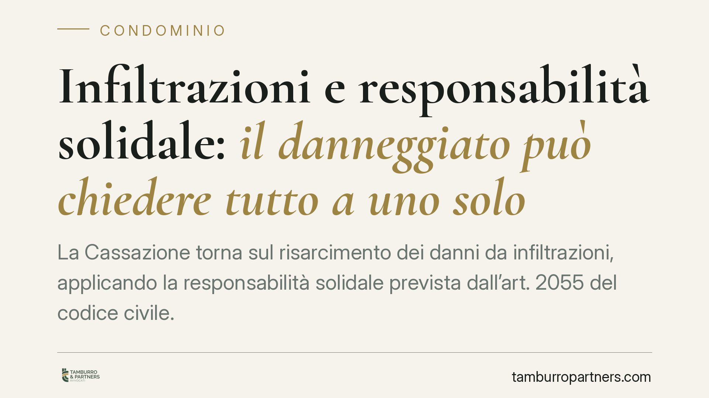

Infiltrazioni e responsabilità solidale: il danneggiato può chiedere tutto a uno solo
La Cassazione torna sul risarcimento dei danni da infiltrazioni, applicando la responsabilità solidale prevista dall'art. 2055 del codice civile. Quando più soggetti — condomìni e proprietari privati — concorrono a produrre lo stesso danno, il danneggiato può pretendere l'intero risarcimento da uno qualsiasi di loro. Un principio che pesa su chi gestisce immobili e su chi subisce l'allagamento.

Il caso
Un imprenditore subisce l'allagamento dei propri locali. Le infiltrazioni non provengono da un'unica fonte, ma dal concorso di più soggetti: parti comuni condominiali e proprietà private confinanti. La Cassazione conferma che, in situazioni simili, tutti i corresponsabili rispondono in solido verso il danneggiato.
Si tratta di un orientamento consolidato, non di una svolta. La pronuncia recente ribadisce l'applicazione dell'art. 2055 c.c. ai danni da infiltrazioni con pluralità di cause imputabili a soggetti diversi.
Inquadramento normativo
Il riferimento è l'art. 2055 del codice civile. Il primo comma stabilisce che, se il fatto dannoso è imputabile a più persone, tutte sono obbligate in solido al risarcimento. "In solido" significa che il danneggiato può chiedere l'intera somma a uno solo dei responsabili, senza dover frazionare la pretesa né citare tutti in giudizio.
Il secondo comma opera invece nei rapporti interni: chi ha pagato l'intero può agire in regresso verso gli altri, per recuperare la quota di rispettiva competenza. La ripartizione avviene in base alla gravità delle singole colpe e all'entità delle conseguenze che ne sono derivate; nel dubbio, le colpe si presumono uguali.
Quando il danno origina dalle parti comuni dell'edificio, entra in gioco anche l'art. 2051 c.c., sul danno da cose in custodia. Il condominio, quale custode delle parti comuni (lastrico solare, tubazioni, facciate), risponde salvo prova del caso fortuito. È una responsabilità di natura oggettiva: non richiede la dimostrazione di una condotta colposa, ma il solo nesso tra la cosa in custodia e il danno.
I profili interpretativi che contano
La solidarietà non è automatica. Presuppone che le diverse condotte abbiano concorso a produrre un unico evento dannoso. Qui si colloca un limite spesso trascurato: la scindibilità del danno.
Se le fonti di infiltrazione hanno prodotto danni autonomi e distinti — ad esempio, un'infiltrazione dal lastrico che danneggia il soffitto e una perdita da un appartamento che rovina una parete diversa, senza sovrapposizione — la solidarietà può non operare. In tal caso ciascun responsabile risponde solo del pregiudizio effettivamente causato. La solidarietà presuppone l'unitarietà del danno, non la mera contemporaneità di più illeciti.
Sul piano probatorio, resta a carico del danneggiato la dimostrazione del nesso causale tra le condotte e il danno. Nell'azione di regresso, invece, l'onere si sposta: chi ha pagato e agisce verso i condebitori deve provare le quote di responsabilità di ciascuno. In assenza di prova, la presunzione di uguaglianza delle colpe governa la ripartizione.
Implicazioni pratiche
Per il condominio. L'amministratore deve considerare che l'ente può essere chiamato a pagare l'intero, anche quando la responsabilità è condivisa con proprietari privati. La documentazione sullo stato delle parti comuni e sugli interventi manutentivi diventa decisiva per il successivo regresso.
Per il singolo proprietario. Anche il privato può essere destinatario dell'intera richiesta, salvo poi rivalersi sugli altri. La verifica delle coperture assicurative — condominiale e individuale — è un profilo da presidiare.
Per il danneggiato. La solidarietà è una tutela: consente di indirizzare la pretesa verso il condebitore più agevolmente escutibile, senza il rischio di vedersi respingere la domanda per mancata chiamata di tutti i responsabili.
Cosa fare in concreto
- Documentare tempestivamente l'entità e l'origine delle infiltrazioni con perizia tecnica, prima che le tracce si alterino.
- Verificare le polizze assicurative, condominiali e individuali, e la loro effettiva operatività rispetto al danno subìto o causato.
- Ricostruire con precisione le cause: la distinzione tra danno unitario e danni scindibili incide sull'applicabilità della solidarietà.
- Conservare la documentazione utile al regresso: verbali assembleari, contratti di manutenzione, comunicazioni tra le parti.
- Attivarsi senza ritardo, considerando i termini di prescrizione dell'azione risarcitoria.
La disciplina della solidarietà offre al danneggiato uno strumento efficace, ma la sua concreta operatività dipende dalla natura del danno e dalla qualità della prova raccolta. È su questi due elementi che si gioca l'esito, sia nell'azione principale sia nel successivo regresso.
---
Contributo informativo a cura di Tamburro & Partners – Avv. Giuseppe Tamburro. Non costituisce parere legale.
Ogni condominio ha una storia a sé.
Se gestisci un'amministrazione e vuoi un confronto su una specifica questione condominiale, scrivi allo studio. Ti rispondiamo entro un giorno lavorativo.